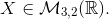
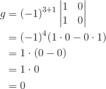
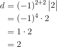

Ecuații matriceale
Definiția M34: Ecuație matriceală
O ecuație de tipul sau sau , unde sunt matrice cunoscute, iar matricea  trebuie determinată, se numește ecuație matriceală.
trebuie determinată, se numește ecuație matriceală.
În particular, dacă matricele  și
și  sunt pătratice inversabile, iar matricea
sunt pătratice inversabile, iar matricea  este pătratică, atunci tipurile de ecuații menționate în definiție se pot rezolva utilizând inversa unei matrice astfel:
este pătratică, atunci tipurile de ecuații menționate în definiție se pot rezolva utilizând inversa unei matrice astfel:
Exemplu:
Să se determine matricea astfel încât să aibe loc egalitatea:
Rezolvare:
Notăm și
Atunci
Determinăm inversa matricei
Calculăm  , pentru a vedea dacă matricea este inversabilă:
, pentru a vedea dacă matricea este inversabilă:
este o matrice inversabilă.
Continuăm procedeul de aflare a inversei matricei .
Scriem transpusa matricei
Calculăm matricea adjunctă
 , unde
, unde


Calculăm inversa matricei  , folosind formula
, folosind formula
Acum putem afla matricea necunoscută 
![\begin{align*} &\Rightarrow X=A^{-1}\cdot B\\\\&=-\displaystyle\frac{1}{7}\cdot \begin{pmatrix} 1 &-3 \\ -2& -1 \end{pmatrix}\cdot \begin{pmatrix} 5 &7 \\ 4&0 \end{pmatrix}\\\\ &=\begin{pmatrix} -\displaystyle\frac{1}{7}\cdot1 &-\displaystyle\frac{1}{7}\cdot(-3) \\ \\ -\displaystyle\frac{1}{7}\cdot(-2)& -\displaystyle\frac{1}{7}\cdot(-1) \end{pmatrix}\cdot \begin{pmatrix} 5 &7 \\ 4&0 \end{pmatrix}\\\\ &=\begin{pmatrix} -\displaystyle\frac{1}{7} &\displaystyle\frac{3}{7} \\ \\ \displaystyle\frac{2}{7}& \displaystyle\frac{1}{7} \end{pmatrix}\cdot \begin{pmatrix} 5 &7 \\ 4&0 \end{pmatrix}\\\\ &=\begin{pmatrix} -\displaystyle\frac{1}{7}\cdot5+\frac{3}{7}\cdot4 &-\displaystyle\frac{1}{7}\cdot7+\displaystyle\frac{3}{7}\cdot0 \\ \\ \displaystyle\frac{2}{7}\cdot5+\frac{1}{7}\cdot4&\displaystyle\frac{2}{7}\cdot7+ \displaystyle\frac{1}{7}\cdot0 \end{pmatrix}\\\\ &=\begin{pmatrix} \displaystyle\frac{-5+12}{7} &-1+0 \\ \displaystyle\frac{10+4}{7}&2+0 \end{pmatrix}\\ \end{align*}](../media/webbooks/283/1807/images/equations/e04nk6vzfwzjqe1b-3-r-w==.gif)
Observație:
Ecuațiile matriceale se pot rezolva și în cazul în care nu toate matricele sunt pătratice, ci doar matricele pentru care trebuie să le calculăm matricele inverse.
Exemplu:
Să se rezolve ecuația matriceală unde 
Rezolvare:
Notăm respectiv
Deci, ecuația se rescrie astfel:
Calculăm, pe rând, inversele matricelor și .
Calculăm pentru a vedea dacă matricea este inversabilă.
este matrice inversabilă.
Continuăm procedeul de aflare a inversei matricei .
Scriem transpusa matricei 
Calculăm matricea adjunctă


![\begin{align*} i&=(-1)^{3+3}\begin{vmatrix} 1 &1 \\ -1 & 1 \end{vmatrix}\\ &=(-1)^6\big[1\cdot 1-(-1)\cdot1\big]\\ &=1\cdot (1+1)\\ &=1\cdot 2\\ &=2 \end{align*}](../media/webbooks/283/1807/images/equations/wvw08apq9x-skpzhmyqd1q==.gif)
.
Atunci
![\begin{align*} A^{-1}&=\displaystyle\frac{1}{\det{A}}\cdot A^{\ast}\\\\ &=\displaystyle\frac{1}{2}\cdot \begin{pmatrix} 1 & 1 &-2 \\ -1& 1& 0\\ 0& 0 & 2 \end{pmatrix}\\\\ &=\begin{pmatrix} \displaystyle\frac{1}{2}\cdot1 & \displaystyle\frac{1}{2}\cdot1 &\displaystyle\frac{1}{2}\cdot(-2) \\\\ \displaystyle\frac{1}{2}\cdot(-1)& \displaystyle\frac{1}{2}\cdot1& \displaystyle\frac{1}{2}\cdot0\\\\ \displaystyle\frac{1}{2}\cdot0& \displaystyle\frac{1}{2}\cdot0 & \displaystyle\frac{1}{2}\cdot2 \end{pmatrix}\\\\ &=\begin{pmatrix} \displaystyle\frac{1}{2} & \displaystyle\frac{1}{2} &-1 \\\\ -\displaystyle\frac{1}{2}& \displaystyle\frac{1}{2}& 0\\\\ 0& 0 & 1 \end{pmatrix} \end{align*}](../media/webbooks/283/1807/images/equations/qajjlhlg7t03hzme1fywgg==.gif)
Calculăm pentru a vedea dacă matricea  este inversabilă.
este inversabilă.

matricea este inversabilă.
Continuăm procedeul de aflare a inversei matricei .
Scriem transpusa matricei .
Calculăm matricea adjunctă



Atunci
Acum puteam afla necunoscuta 
![\begin{align*} &\Rightarrow X=A^{-1}\cdot B\cdot C^{-1}\\\\ &=\begin{pmatrix} \displaystyle\frac{1}{2} & \displaystyle\frac{1}{2} &-1 \\\\ -\displaystyle\frac{1}{2}& \displaystyle\frac{1}{2}& 0\\\\ 0& 0 & 1 \end{pmatrix} \cdot \begin{pmatrix} 2 &1 \\ 1&0\\ 0&1 \end{pmatrix} \cdot \begin{pmatrix} -4 & 3 \\ 3& - 2 \end{pmatrix}\\\\ &=\begin{pmatrix} \displaystyle\frac{1}{2}\cdot2+\displaystyle\frac{1}{2}\cdot1+(-1)\cdot0 & \displaystyle\frac{1}{2}\cdot1+\displaystyle\frac{1}{2}\cdot0+(-1)\cdot1 \\\\ \Big(- \displaystyle\frac{1}{2}\Big)\cdot2+\displaystyle\frac{1}{2}\cdot1+0\cdot0&\Big(- \displaystyle\frac{1}{2}\Big)\cdot1+\displaystyle\frac{1}{2}\cdot0+0\cdot1\\\\ 0\cdot2+0\cdot1+1\cdot0&0\cdot1+0\cdot0+1\cdot1 \end{pmatrix} \cdot \begin{pmatrix} -4 & 3 \\ 3& - 2 \end{pmatrix}\\ \end{align*}](../media/webbooks/283/1807/images/equations/y47uqceftaogm6rh2oysgg==.gif)
![\begin{align*} &=\begin{pmatrix} 1+\displaystyle\frac{1}{2}+0 &\displaystyle\frac{1}{2}+0-1 \\ \\ -1+\displaystyle\frac{1}{2}+0&-\displaystyle\frac{1}{2}+0+0 \\\\ 0+0+0 & 0+0+1 \end{pmatrix}\cdot \begin{pmatrix} -4 & 3 \\ 3& - 2 \end{pmatrix}\\\\ &=\begin{pmatrix} \displaystyle\frac{3}{2} &-\displaystyle\frac{1}{2} \\ \\ -\displaystyle\frac{1}{2}& -\displaystyle\frac{1}{2}\\ \\ 0 &1 \end{pmatrix}\cdot \begin{pmatrix} -4 & 3 \\ 3& - 2 \end{pmatrix}\\\\ &=\begin{pmatrix} \displaystyle\frac{3}{2}\cdot(-4)+\Big(-\displaystyle\frac{1}{2}\Big)\cdot3 &\displaystyle\frac{3}{2}\cdot3+\Big(-\displaystyle\frac{1}{2}\Big)\cdot (-2) \\ \\ \Big(-\displaystyle\frac{1}{2}\Big)\cdot(-4)+\Big(-\displaystyle\frac{1}{2}\Big)\cdot3&\Big(-\displaystyle\frac{1}{2}\Big)\cdot3+\Big(-\displaystyle\frac{1}{2}\Big)\cdot(-2) \\ \\ 0\cdot(-4)+1\cdot3&0\cdot3+1\cdot(-2) \end{pmatrix}\\ \end{align*}](../media/webbooks/283/1807/images/equations/jdy6ub-oce_9olrkps4jkq==.gif)